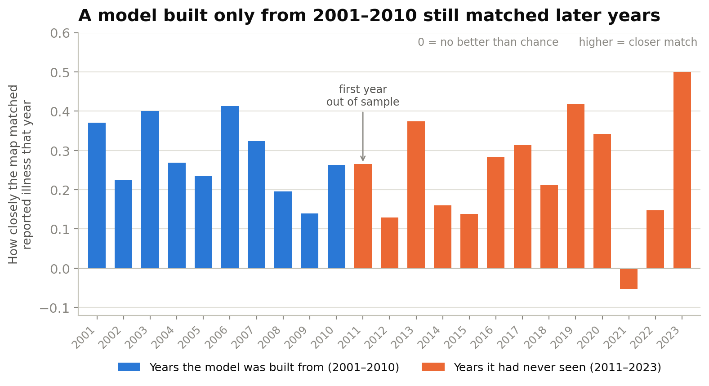

Valley Fever is a lung infection people catch by breathing in spores from dry soil. This page shows where California's climate most resembles places people already get sick, and how many people work outdoors there.
See reported illness in the county, the climate match at that spot, and what the month usually looks like.
Addresses are matched by Photon, which uses OpenStreetMap data, and by the U.S. Census Bureau geocoder. This page does not keep what you type.
Coccidioides grows in dry soil in parts of California and the Southwest. Wind, digging, farming and construction stir its spores into the air.
Most people who breathe in the spores never feel ill. Some get weeks of flu-like illness, and a few become seriously ill. It does not spread from person to person.
The people most likely to disturb dry soil are at work, in farming, construction, oil and gas, road work and firefighting.
This page keeps where the climate suits the fungus, who works there and how many people get sick apart. None is used as a stand-in for another.
Choose what to show, then point at or tap a county or area to see its numbers.
A screening tool, not a hazard rating. It shows where climate and illness go together, which is not proof of cause. It is not a soil test, and a looked-up address shows the area around it, not conditions at that exact spot. What the map cannot tell you
Pick an area, then point at or tap a year. All four charts share one timeline, so each year's model estimate, reported cases and winter rain line up.
The shaded bands are the two droughts the team asked about, water years 2007 to 2009 and 2012 to 2016. Studies of California data find more cases in the fall after a wet winter, more so after dry years (Head and others, 2022).
Mandatory lab reporting began in 2010, which overlaps the first rise, and two droughts are too few to separate weather from reporting. The bands are not proof of cause, and no warning rule is drawn from them.
Cases are reported all year, with a peak from late summer into fall.
Share of each year's cases by month of report, statewide, 2018 to 2025. October is the busiest month (10.1%) and January the quietest (5.6%).
Kern reports more Valley Fever than anywhere in California, about 15 times the state rate. Its six areas are shown with four separate layers, never blended into one score.
Soil-disturbing and other outdoor employer sites in the whole county, by three-digit 2022 industry code. People employed, then the number of sites. Not shown by area, where the groups get too small to publish.
For review only, not a notice list. These counts summarize a working list used to check which business records can be placed and classified. Nothing here names an employer, the list has not been reviewed with Consultation, and the site is not ready to send notices.
How many people in soil-disturbing jobs live or work where the climate scores highest.
People employed at soil-disturbing sites based in the area; the colored part of each bar is those at sites in high-match climate, 2019 to 2023
| Area | Workers | In high-match climate | Share |
|---|---|---|---|
| Kern County (West) / Delano, Wasco & Shafter Cities | 12,618 | 12,251 | 97% |
| Fresno County (West) / Selma, Kerman & Coalinga Cities | 8,229 | 8,229 | 100% |
| Stanislaus County (Northeast) / Turlock, Riverbank, Oakdale & Waterford Cities | 7,938 | 7,938 | 100% |
| Kern County (Central) / Bakersfield City (Northwest) & Rosedale | 7,414 | 7,414 | 100% |
| Kern County (Central) / Bakersfield City (Southwest) | 6,830 | 6,830 | 100% |
| Tulare County (Outside Visalia, Tulare & Porterville Cities) | 6,235 | 6,214 | 100% |
| Placer County (Southwest) / Roseville City | 5,602 | 5,467 | 98% |
| Fresno County (North Central) / Fresno City (North) | 5,033 | 5,033 | 100% |
| Kern County (East) / Ridgecrest, Arvin, Tehachapi & California City Cities | 5,232 | 4,988 | 95% |
| Fresno County (Central) / Fresno City (East Central) | 4,001 | 4,001 | 100% |
Workers: American Community Survey 2018 to 2022, counted where people live. Employer sites: Dun & Bradstreet, July and August 2026, sites with five or more employees, counted where the employer is based, so crews that work elsewhere and seasonal farm labor are missed. Survey figures are close estimates, not exact head counts. Neither source contains case data.
Work-related Valley Fever can be prevented by keeping dust down, protecting workers' lungs when dust can't be avoided, and training crews to recognize symptoms early. These official pages have the details.
Cal/OSHA's guidance notes that face coverings and masks do not protect against Valley Fever. Where dust can't be avoided, it calls for NIOSH-approved respirators used under a respiratory protection program.
More guidance for employers and workers will be added to this section.
The model learned from 2001 to 2010 only, and only from the seven counties reporting at least 20 cases per 100,000 residents in those years. It was then asked to rank the 51 counties it had never been told anything about, in years that had not happened yet.

Maps for different years look much alike. Weather seems to change how many cases are reported far more than where they happen.
People reasonably ask why we model climate instead of just testing the dirt. The answer is that testing soil for this fungus almost always comes back negative, even where people are getting sick.
That is the gap this map is meant to help with. It is not a replacement for soil testing, but a way to narrow down where testing and dust controls would be worth the effort.
Clusters among workers have repeatedly followed soil disturbance without dust protection. Documented examples include a solar farm construction site in Monterey County (2016 to 2017), two Central Valley prisons (2009 to 2013), a wildland firefighting crew digging fire lines near Tehachapi (2021), and an archaeological dig near Red Bluff (1972) where 17 of 39 students fell ill.
Predictors for a given case-year come from the 12 months ending in September of that year, plus the winter before them (October to March) and the winter before that. Nothing from after September of the year is used, so a year's estimate never uses its own late-season weather. The two-winters-back rainfall term is included because wet winters are thought to grow the fungus before a later dry season lifts it into the air.
Climate: PRISM 4 km monthly rainfall and temperature, 1999 to 2023, giving 23 case-years built from 900 monthly grids. Cases: California Health and Human Services open data, coccidioidomycosis by county and year, 2001 to 2023. Workforce: American Community Survey 2018 to 2022. Businesses: County Business Patterns 2022. Terrain: elevation.
Method: a standard mapping technique called MaxEnt, which turns climate measurements into a score between 0 and 1 for every square on the map. A record is one 4 km grid cell in one year. Cells count as present in a year if their county reported at least 20 cases per 100,000 that year. Comparison cells are drawn from census tract centers across the whole state, so that the map reflects where conditions match rather than simply where people live.
Full-period model: 7,514 presence and 20,700 comparison records; area under the curve 0.87 on training data and 0.82 when tested on geographically separated blocks it was not trained on. Agreement with county rates on the 51 counties it was never given labels for averaged 0.25 across 13 unseen years, ranging from -0.05 to 0.50. In its weakest year the map was no better than chance. Averaged across all years and compared with pooled 2001 to 2023 illness, agreement is 0.60 on those same counties.
Agreement here means rank agreement, whether the counties the map puts near the top are the ones that actually report the most illness. It runs from −1 to 1, where 0 means no better than chance. It describes how well the map orders counties, not how many cases it predicts. Statisticians call this measure Spearman's rank correlation.
Source: two Dun & Bradstreet extracts of California business sites with five or more employees on site, July and August 2026, 490,452 sites after the two pulls were merged. Each site carries an address, coordinates, an industry code and an on-site headcount. Coordinates were checked against the county label and the ZIP code and repaired from the ZIP centroid where they disagreed. Where a company-wide total had been filed against one address, the headcount used here is capped at its industry's 99th percentile; the delivered figure is kept alongside.
Industries are grouped by NAICS code. Soil-disturbing: construction (23), crop and animal production, forestry and agricultural support services (111, 112, 113, 115), mining and oil and gas (21), landscaping (561730), remediation and landfills (562910, 562212, 562219), field surveying (541360, 541370), fire protection (922160) and national security (928110). Other outdoor work adds fishing, utilities, trucking, waste collection, parks and outdoor recreation, mineral products, building-materials yards and environmental consulting. The grouping follows Cal/OSHA's Valley Fever guidance on who is exposed and is a proposal, not a regulatory list.
Climate at a site is the climate layer's value for the 4 km cell the site falls in, expressed as a rank among California's cells; "high-match" means the top quarter. Sites on the shoreline whose cell center is over water take the nearest land cell. Areas are the same 281 Public Use Microdata Areas as the outdoor-work layer. "High on both" asks two yes-or-no questions of each area. Is it in the top third of areas by people employed at soil-disturbing sites, and do those sites sit, on average (weighted by headcount), in the top quarter of the climate layer. Both answers are relative, so the layer says which areas stand out, not how much exposure there is.
Resolution of each series. Reported cases are counts by county of residence and calendar year, so they say nothing about where inside a county, or in which month, anyone was exposed. The model works on 4 km squares and a case-year that runs October to September, and is averaged here over each county. Winter rain is PRISM 4 km rainfall for October to March, averaged over the county the same way.
Model estimate. For each county and case-year, the model's scores are averaged over every square in the county, the same county average used in the checks above. All 1,334 county-years (58 counties by 23 years) are ranked together and scaled from 0 to 100. California's value is the average over every square in the state, placed on the same scale. The yearly values come from a refit of the model behind the map, using the same code, settings and public data. A refit comes out close to the original but not identical, because the comparison points are drawn at random. The counties fall in nearly the same order as on the published map (rank agreement 0.997), and 97% of squares land in the same top-quarter class.
Weather check. For each area, the change in the reported rate from one year to the next (22 changes, 2002 to 2023) is compared by rank with rain in the October to March winter ending in that year, the winter before, and the one before that. Areas with a median below 20 cases a year are not tested. Of the 21 areas tested (California and 20 counties), 11 showed cases rising after a wetter winter, at p below 0.05. None showed a rise after rain one winter earlier, and 2 showed a fall after rain two winters earlier. The test is sensitive to the years when reporting changed. Leaving out the changes into 2010, 2011 and 2019, 6 of the 11 still pass, and Kern is not among them. With this many areas and three timings, about three results would pass by chance alone, and the tests are not independent, since California's total includes its counties. Statewide, the rank agreement is +0.68, and +0.63 without those years.
Drought periods. Water years 2007 to 2009 and 2012 to 2016, as the Department of Water Resources dates them. Rates during and after each drought are pooled, total cases over total residents.
Studies cited. Head and others, Lancet Planetary Health, 2022, for the wet-winter and post-drought findings. Reporting changes that also move the counts include mandatory laboratory reporting from 2010, a laboratory-only case definition from 2019 and a new national definition in 2023.
The page is built so that no employer figure describes one or two sites. Counties are counted where each site is located rather than by the county the directory names (one site on a boundary between two areas is counted with the area around it), so area and county counts fit together exactly. Where a county has only one or two sites in an industry group, its numbers for that group are not shown, and where that county shares an area with other counties, one more of them is hidden too. An area's split between sites in high-match climate and the rest is not shown when either side would hold one or two sites. A county's split is shown only when the splits of all its areas are shown, so it is never more than their sum. Top industries by county list only industries with at least three sites, and the ranked chart of ten areas leaves out areas whose split is not shown. The 5 sites with no usable location are left out of every employer figure.
Areas are Kern's six 2020 Public Use Microdata Areas, the same areas as the outdoor-work layer. Outdoor workers, overall and by industry, come from the American Community Survey, 2018 to 2022, and are counted where workers live. Employer sites are the same business directory extract as the statewide layers, counted where each site is located, so the six areas add up exactly to the county figures. 33 sites that the directory lists under Kern are located outside it and are counted in the county where they sit.
The directory carries six-digit 2022 industry codes. The page shows them at three digits for the county as a whole, where every group holds at least three sites. Splits by area, or at four digits, break into groups of one or two sites. A review found that such small groups could be worked out from the other published numbers even when hidden, so those splits stay in the internal review file.
Match confidence says how sure we are which area a site is in. High means the directory's coordinate was confirmed by the county boundary and the ZIP code, at an address no more than four other businesses share. Medium means the point is near the county line, the directory lists the site under another county, or the address is shared by five or more businesses, which is often an accountant or registered agent rather than a work site. Low means the location came from the ZIP code's center. Unresolved means the coordinate, ZIP code and county could not be reconciled. Climate rank is the climate layer's rank for the 4 km squares where an area's soil-disturbing sites sit, weighted by headcount. Reported illness is published only for the county as a whole.
Presence labels come from county-level rates, so every cell in a county shares one label; this blurs conditions inside large counties. Reporting has increased over the period, so any apparent strengthening over time should not be read as the fungus spreading. Coastal areas such as San Luis Obispo are recognized poorly by a model trained mostly on inland valleys. About 6% of California has a climate unlike anywhere the model learned from, and estimates there are least reliable.